01
컨셉
신입의 반응에 따라 행동을 바꾸는 로봇
✕강사가 일방적으로 설명
→✓
로봇이 현장 구역을 직접 안내신입이 로봇을 따라 실제 구역을 돌며 배움
✕이해했는지 확인하기 어려움
→✓
카메라 인식 + 퀴즈로 바로 확인LED · 소리로 정답 · 오답을 즉시 알려 줌
✕틀린 내용도 다시 짚지 않음
→✓
틀린 구역만 기억했다가 재교육2바퀴째에는 힌트를 먼저 주고 다시 확인
SCENARIO한 바퀴 돌고, 틀린 곳만 다시
- 출발노란 선 보행로봇을 따라 이동
- ①보호구 점검안전모 인식 → 퀴즈
- !장애물 감지정지 → 자동 재개
- ②품질 검사불량 부품 퀴즈
- ③비상 정지버튼 인식 → 시연
- 2바퀴틀린 구역만힌트 먼저
- 결과리포트점수 · 오답 · 다음 단계
0회
초록 LED · 성공음다음 구역으로 이동
1회
빨간 LED · 경고음재교육 리스트에 저장
2회
같은 구역 2번 오답설명을 처음부터 다시
02
시뮬레이션
실제 로봇에 올리기 전, 3D 공장에서 교육 흐름을 먼저 확인
SIMULATION · 1:03현장 실습 게임 · 신입이 로봇독을 따라 실습
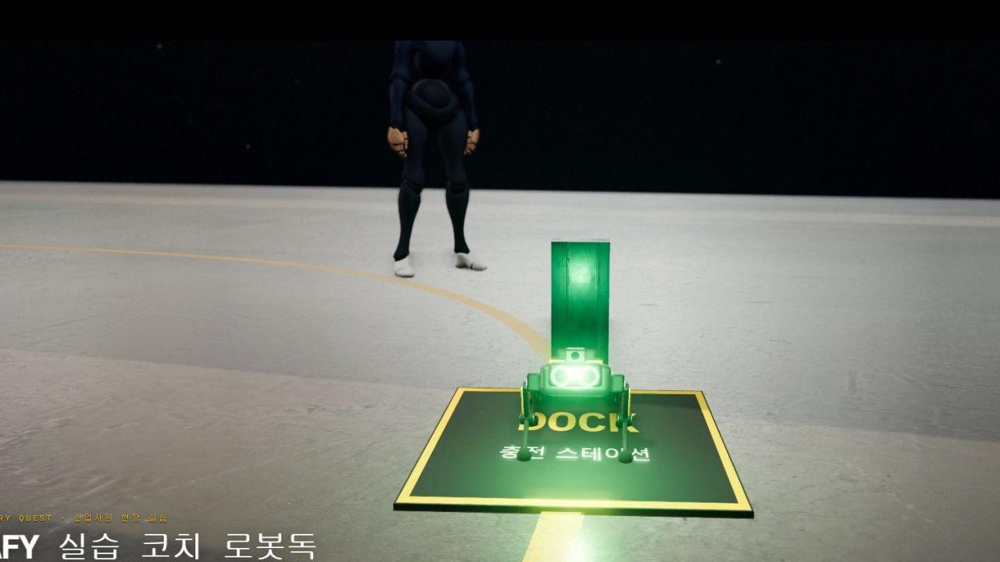
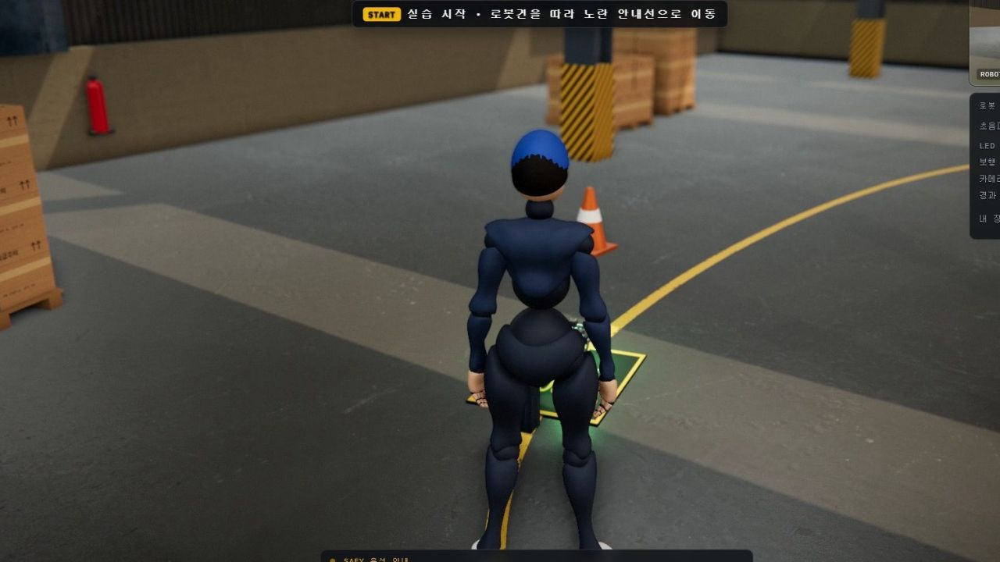
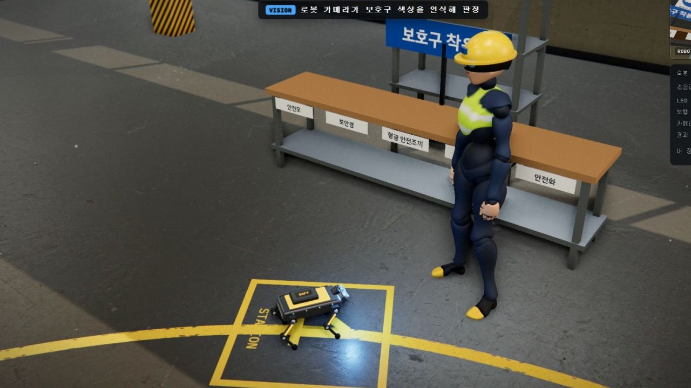
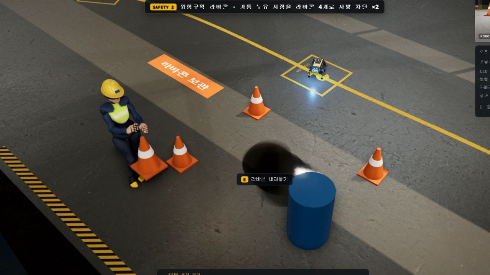
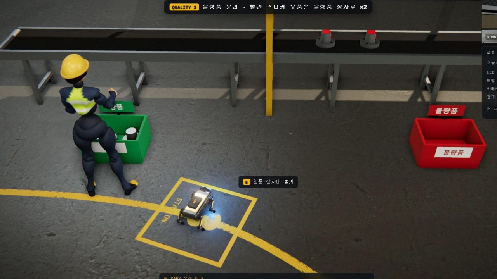
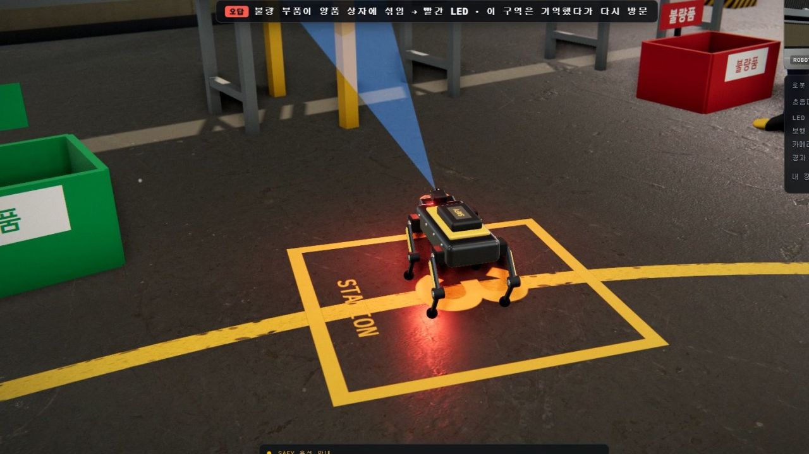
플레이어가 신입 작업자 캐릭터를 직접 움직입니다
앞 영상과 다른 점
- 로봇독이 앞장서고 신입이 뒤를 따라 이동
- 설명만 듣지 않고 신입이 직접 행동
- 보호구 착용 · 라바콘 설치 · 불량품 분리
- 결과를 LED로 바로 알려 줌
- 틀린 구역은 기억했다가 다시 방문
03
실습
실제 MechDog로 구현한 기능 4가지
PRACTICE 1선 따라 이동
시뮬레이션에서는노란 안내선 보행
책상 위에 놓은 선을 카메라로 보며 따라 걷기
- 라인 추적으로 선 위치를 보고 방향 조정
- 교육 시작 시 신입을 구역까지 안내
- 선을 놓친 경우 → 04 실패사례
PRACTICE 2옷 구별
시뮬레이션에서는보호구 점검
휴대폰 속 인물 사진으로 작업복 착용 여부 구별
- 로봇 카메라 화면을 노트북에서 확인
- 안전 조끼 사진과 일반 옷 사진을 번갈아 테스트
- 현장에서는 보호구 착용 점검으로 활용
PRACTICE 3위험지대 바리게이트 인지
시뮬레이션에서는위험 구역 · 장애물
컵 바리게이트를 놓고 치우며 LED 반응 확인
- 바리게이트 상태에 따라 LED 빨강 ↔ 초록
- 위험 구역에 다가가면 경고하는 장면
- LED 색만 보고도 위험 여부를 바로 파악
PRACTICE 4제품 구별
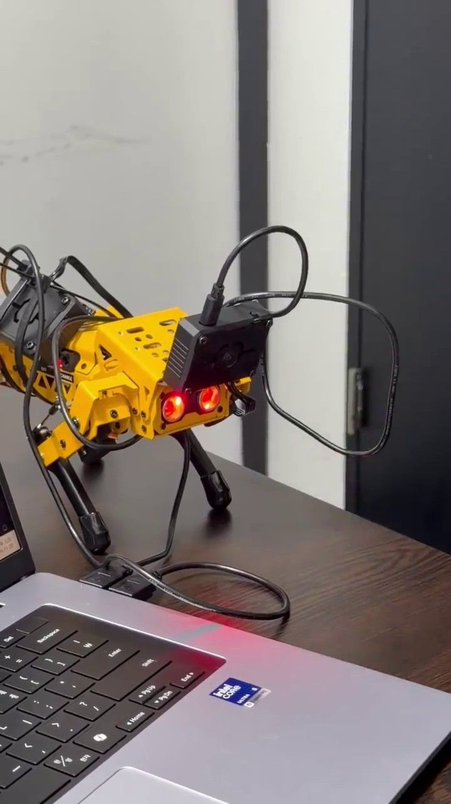
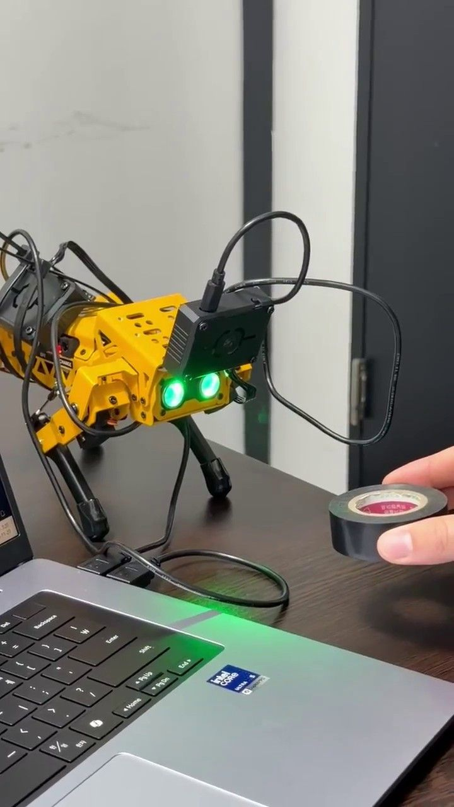
시뮬레이션에서는품질 검사
테이프 롤을 제품으로 보고 LED 색으로 구별
- 카메라에 제품을 보여 주면 LED가 빨강 / 초록으로 바뀜
- 정상 · 불량 부품을 색으로 단순화
- 색을 잘못 인식한 경우 → 04 실패사례
SIMULATION → REAL시뮬레이션 기능을 실제 MechDog로
→
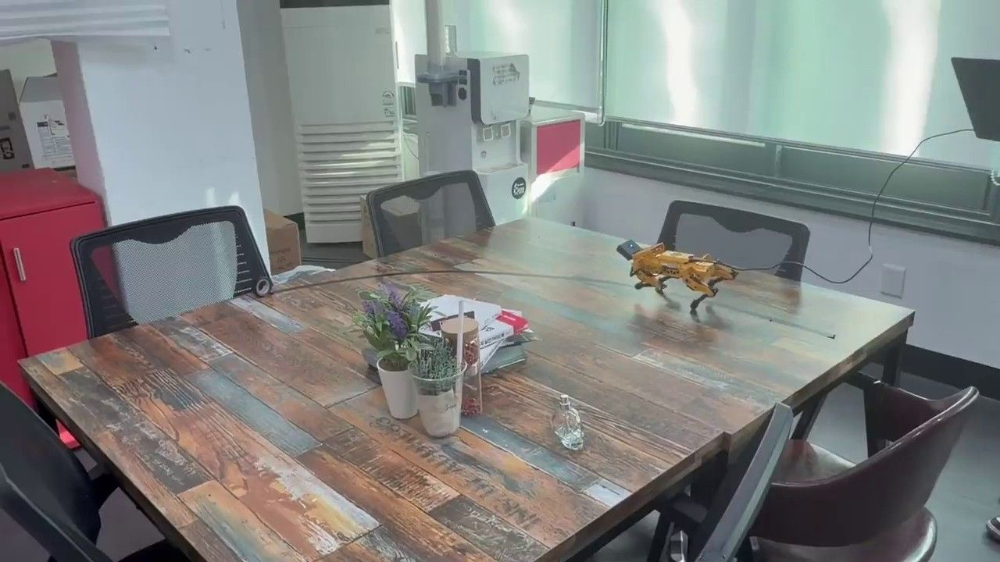
노란 안내선 보행바닥 선을 카메라로 추적 (라인 추적)
선 따라 이동→
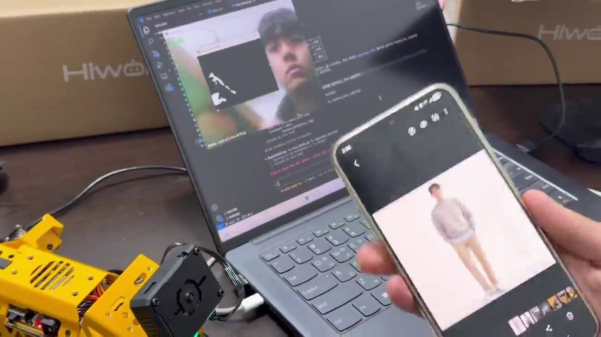
보호구 점검카메라로 작업복 착용 여부 구별
옷 구별→
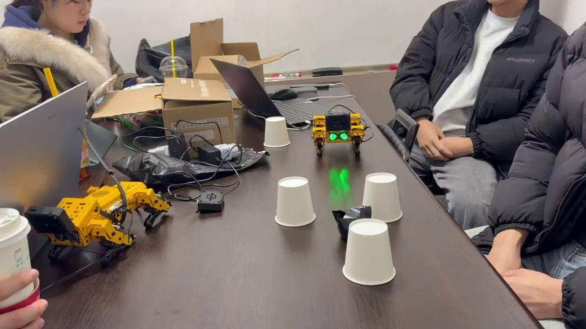
위험 구역 · 장애물바리게이트를 인식해 LED로 경고
위험지대 바리게이트 인지→
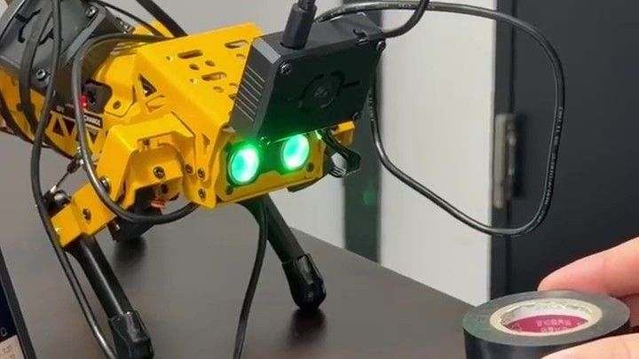
품질 검사색으로 정상 · 불량 제품 구별 → LED 색
제품 구별MechDog 카메라의 색 인식 · 라인 추적 기능으로 대부분의 인식을 색으로 단순화했습니다.
04
실패사례
안 된 것, 원인, 다음에 바꿀 것
FAILURE 1선 따라 이동 추후 선 없이 이동할 것
무슨 일이걷다가 선을 벗어나 사람이 로봇을 다시 잡아 옮김
✕ 원인 (추정)
- 선이 카메라 시야에서 벗어남
- 선과 책상 무늬의 색 대비가 약함
- 케이블이 로봇 움직임을 당김
✓ 다음 대응
- 선을 놓치면 제자리 회전으로 다시 찾기
- 대비가 큰 테이프 선 사용
- 보행 속도를 낮춰 재시험
FAILURE 2제품 구별
무슨 일이빨강 공을 보여 줬는데 LED가 초록 · 파랑으로도 바뀜
✕ 원인 (추정)
- 조명에 따라 색 인식 값이 흔들림
- 공과 카메라 거리가 계속 바뀜
- 색 판정 기준값이 넓음
✓ 다음 대응
- 시연 장소 조명에서 기준값 재조정
- 2회 연속 같을 때만 판정
- 공과 카메라 거리 고정
LESSONS실패에서 배운 것
1
시뮬레이션 ≠ 현실
화면에서는 완벽했던 인식이 실제 조명 · 거리에서 흔들림
2
한 번에 판정하지 않기
같은 결과가 연속으로 나올 때만 정답 · 오답 판정
3
놓쳤을 때의 행동 정하기
선을 놓치거나 인식이 안 되면 로봇이 할 일을 미리 정함
다음 목표 · 계획서 기준
전체 시나리오 10회 반복 테스트 중 8회 성공
8 / 10